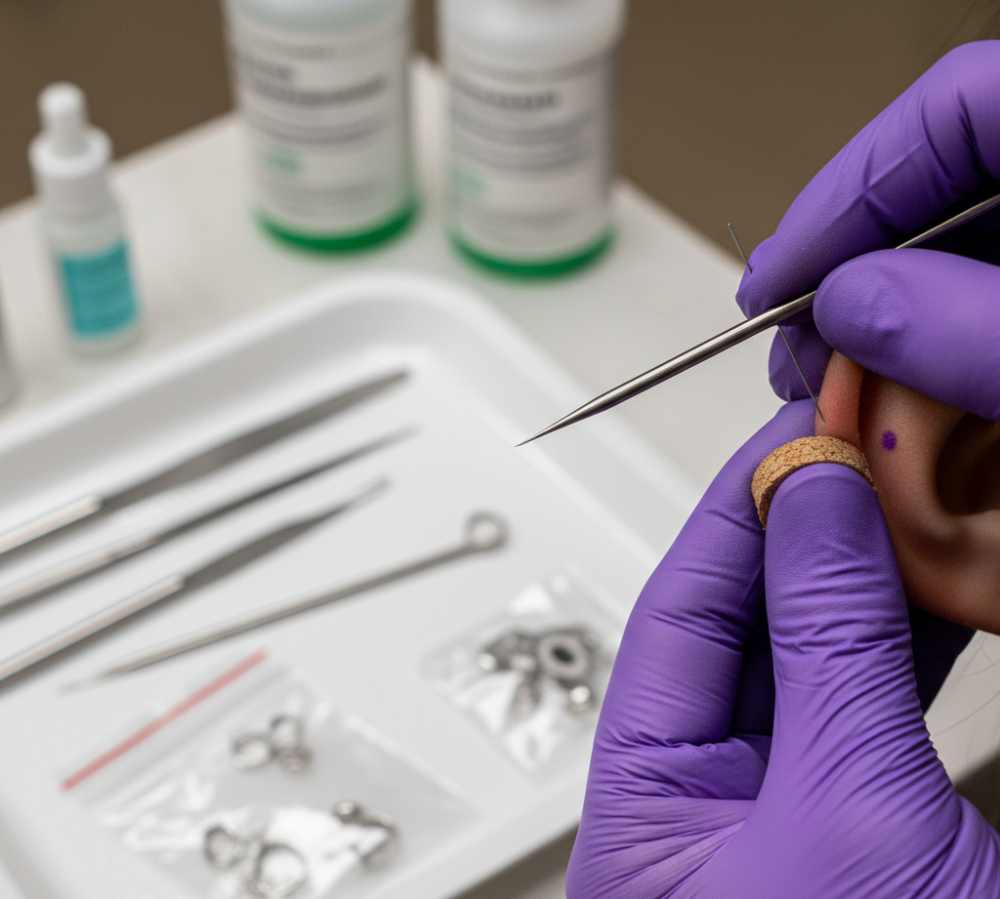

Ear Piercing

Ear Piercing is a common cosmetic procedure involving the puncture of the earlobe or cartilage to allow the insertion of jewelry.
Common Piercing Complications
- Infection
- Allergic Reaction
- Keloid Formation
- Migration/Rejection
Keloid: An overgrowth of scar tissue that appears as a firm, raised, often pink or flesh-colored lump. While not dangerous, keloids may require dermatological treatment, such as steroid injections or laser therapy, to shrink or remove.
In addition its a primarily form of personal expression and adornment, it is a minor surgical procedure that carries specific medical considerations, making the choice of method and aftercare crucial for a safe outcome.

Aftercare Tips
Aftercare requires strict adherence to hygiene to ensure safe healing. Avoid using harsh chemicals like alcohol or hydrogen peroxide to prevent irritation and complications. Do not remove the initial, hypoallergenic jewelry until the piercing is fully healed.